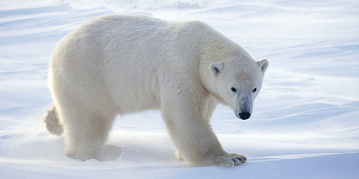

Arctic Mammals
Home |
Arctic Wolf |
Arctic Fox |
Polar Bear
Polar Bears
Polar bears are found within the arctic circle. They hunt for food by drifting through the arctic sea on sea ice and attacking seals that get near them. Since they are so reliant on this sea ice for hunting their populations are declining due to the warming of the ice caps.
6 Polar Bear Fun Facts:
- Polar bears have two layers of fur
- The largest polar bear ever recorded weighed 2,209 lbs.
- There are only 25,000 polar bears living today
- The oldest polar bear recorded was 42 years old
- Polar bears can smell food up to 20 miles away
- Polar bear fur is clear and their skin is actually black. They appear white due to the light reflecting off of their coats

For more information visit: Polar Bears